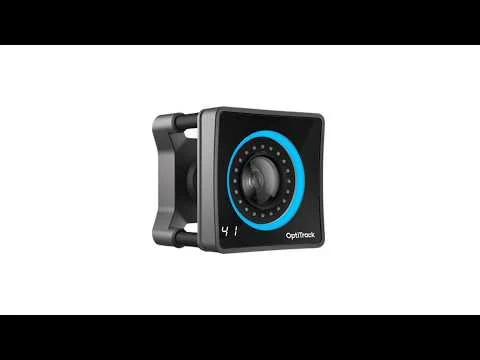

3D & Games2026
OptiTrack
Real movement, translated into a digital space.
See it in action
Recorded demo
A recorded look at the concept. Open on YouTube for playback options.
The challenge
Explore how physical movement can be represented digitally in real time.
The idea
Use OptiTrack optical tracking cameras to demonstrate motion capture.
What came out of it
A recorded motion-capture demonstration.